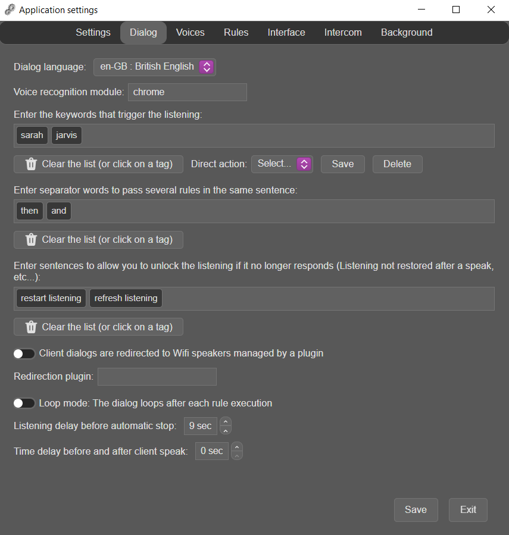
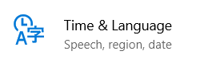
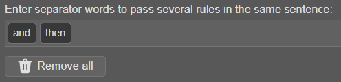

Dialog tab

Dialog language
The dialog language is:
- Voice rules that you dictate in a language
- Voice messages that the A.V.A.T.A.R client can say
The two are associated. When you set a dialog language, it is defined for voice rules and return messages from the A.V.A.T.A.R client.
When you select a language, the A.V.A.T.A.R client searches for it in two different ways:
- In the system language packs (named
Local voices) - In Chrome speech synthesis (named
Remote voices)
If the selected language exists in at least one of the two searches, you can then choose a voice in the Voices tab, choosing between Remote voices and Local voices.
For this reason, you may see differences in the voices available between the two types of voice selection.
It's even possible that for Remote voices you'll find no voices at all, and for Local voices you'll find a few, and vice versa.
Now, follow the Voices tab chapter to define a current voice for the language.
If you encounter a problem, try to solve it in the next chapter.
Possible errors and resolutions
-
A Warning message appears
If the selected language does not exist in the 2 searches (
Local voicesandRemote voices), a warning message is displayed.
For example, if Bulgarian language does not exist, the following error message appears:Do the following to resolve the problem:
- Check if the language pack is correctly installed in the system by following the Installation section below.
- Check if the language pack is correctly installed in the system by following the Installation section below.
-
The language does not appear in the
Dialog languagelistDo the following step to resolve the problem:
- Check if the language is correctly defined by following the Configuration section below.
- Check if the language is correctly defined by following the Configuration section below.
-
The language test in the
Voicestab gives no resultDo the following step to resolve the problem:
- Check if the language is correctly defined by following the Configuration section below.
Installation
Select the client platform below to display the possible language installation.
If a warning message appears, the language pack must be installed in the system.
- Open Windows Settings
-
Select
time & language
-
To the left, select
Speech -
Scrool until to see
Manage voicesandInstalled voice packagesNote: In the example below,
FrenchandEnglish (UK)voice packages are installed, but it can be different in your system -
Click on
Add voicesbutton - Select at least one voice package
- Click
Add - Wait for the installation (may be take a while)
-
The language pack appears in the list and a warning message is displayed
-
Restart A.V.A.T.A.R client
At the installation of the macOS system, the language packs are installed with it.
As a result, no installation is required.
You can check that the language is correctly configured in the Configuration chapter.
To display installed voices in the system:
- Open a Terminal
-
Enter the following command:
> say -v '?' -
You can then search for a region code and check if there are voices for that language.
Warning
The region code displayed is in macOS format.
For example, for the region code "fr-FR", it appears as "fr_FR".
Replace the dash-down ("_") with a dash ("-") to use it everywhere.
To display installed language packs in the system (no to select, only display and verify):
- Open
System settings - In the menu, select
General - Select
Language and region -
Click on the cross
-
Search for the language
The Linux system is a special case. It doesn't have system language packs, nor Chrome speech synthesis.
Fortunately, we have an alternative voice system:
espeakis a multi-language speech synthesizer, which we'll use only for phonetic conversion.mbrolais a multi-language voice synthesizer that offers improved rendering and can be coupled withespeak.
During the client installation, espeak and mbrola packages are automatically installed.
The espeak package already contains all voices associated with the package, and they automatically appear in the List of available voices list in the Dialog properties tab.
But for mbrola you need to manually install the voices available from the mbrola GitHub site.
Download mbrola voices:
- Open an internet navigator
- Go to the mbrola github site
- Make your choice and download voices.
-
Copy the file to the /usr/share/mbrola/
name/ directory (in user root, create this directory if it not exists)- For example, for a
mb-fr4voice, the file isfr4, then i create afr4directory and copy the file to this directory:
> sudo mkdir /usr/share/mbrola/fr4 > sudo cp ~/downloads/fr4 /usr/share/mbrola/fr4 # result: /usr/ share/ mbrola/ fr4/ fr4Tip
A mbrola voice code is defined by
mb-<file>.
For example, for a fr4 file, the voice code ismb-fr4.After downloading a voice, make a test in a terminal to check if it works.
For example, for French, only the mb-fr1 (male) and mb-fr4 (female) voices work.
For example, to test a
mb-fr4voice:> espeak -v mb-fr4 -q --pho "Je parle correctement" | mbrola -t 1.5 -e -C "n n2" /usr/share/mbrola/fr4/fr4 - /tmp/test.wav > aplay --file-type wav /tmp/test.wav - For example, for a
Configure mbrola voices:
Now, you have to configure a voices.jon file to include mbrola voices to the A.V.A.T.A.R client properties.
-
Create and edit a voices.jon file:
-directory/resources/app/core/lib/tts/linux/voices/voices.json for an installation in a directory where-directoryis the directory choosen for the installation.- /usr/lib/a.v.a.t.a.r-client/resources/app/core/lib/tts/linux/voices/voices.json for an installation with the
-installerparameter.
-
In the voices.jon, add the voice using the following format:
parameter type Comment default boolean trueoufalse. Whether the voice is by default or not. Note that only one voice can be set to defaultname string The name displayed in the List of available voiceslist in theDialogproperties tab.
Therefore, you can put in brackets a text that makes the difference withespeakvoicesgender string maleoufemale. Voice genrelanguage string The language code of the voice code string The name of the mbrolavoicefile string The mbrolavoice fileExample of a
voices.jsonfile with 2 voices :[ { "default": true, "name": "French female voice (mbrola)", "gender": "female", "language": "fr-fr", "code": "mb-fr4", "file": "/usr/share/mbrola/fr4/fr4" }, { "default": false, "name": "French male voice (mbrola)", "gender": "male", "language": "fr-fr", "code": "mb-fr1", "file": "/usr/share/mbrola/fr1/fr1" } ]
Configuration
The list of languages appearing in the Dialog language list is defined in the BCP47-dialog.loc file (.json format).
The Dialog language list displays a large number of languages.
However, after checking that the language pack is in the system, you may find yourself in one of the following situations:
- You don't see the language in the
Dialog languagelist in theDialogtab - You see the language in the
Dialog languagelist, but the language test in theVoicestab gives no result.
Below, the location of the BCP47-dialog.loc file:
| Platform | File |
|---|---|
| Windows / linux | <A.V.A.T.A.R>/resources/app/locales/BCP47-dialog.loc |
| macOS | <A.V.A.T.A.R>/Contents/Resources/app/locales/BCP47-dialog.loc |
Language format in file BCP47-dialog.loc:
"3": {
"tag": "en-GB",
"region": "British English",
"code": "809"
},
| Key | Example | Description |
|---|---|---|
tag |
en-GB | Local country code. This code is used by linux and macOS to map the available system voices to the country.To find out the country code, do a web search or use this site. |
region |
British English | The name of the voice that appears in the Dialog language list |
code |
809 | Hexa code of the local country. This code is used by Windows to map the available system voices to the country.To find out the country code, do a web search or use this site (keep the 3 last characters). |
-
Retrieve language information (see table above)
You need a
tagvalue forlinux&macOSand acodevalue forWindows -
Check if the language is already listed in the BCP47-dialog.loc file
- Open the file BCP47-dialog.loc in your favorite text editor
- Search on language
tag,regionorcode.
-
If NOT exists:
-
Retrieve voice information and add a new entry to the file
Note: the entry key is the last number of entries + 1
For example, let's assume that the languageNorwegian (Norway)doesn't exist:"45": { "tag": "nn-NO", "region": "Norwegian (Norway)", "code": "814" } -
Save the file
- Restart A.V.A.T.A.R client
-
-
If exists:
-
Check if
tagandcodeare correctly defined.It may happen that language code information differs from one site to another.
You can try other language codes if you see a difference with what you've found in the web.For example, for the
Norwegian, there are several language codes with differenttagandcode. -
Change voice information for the language (or create a new entry)
- Save the file
- Restart A.V.A.T.A.R client
-
Voice regognition module
This parameter defines the folder where speech recognition methods are located.
app /
core /
chrome /
Info
The client's speech recognition uses the Web Speech API interface, which can be accessed by all browsers. At the installation, a client embades a version of Google Chrome for testing to ensure perfect compatibility with the client's version at all times (Google Chrome for testing application is installed in the <user home directory>/.cache folder).
It is possible to develop another speech recognition module based on another application.
For more details, leave a message on the application's github.
Trigger keywords
List of keywords that trigger listening.
Keywords must be defined in the current language.
See:
- Voice rules for more information about trigger listening.
Dialog languagefor more information with its association with a language.
Direct rule
In this field, you also have the option to define phrases that are not used as keywords but as direct actions.
Warning
Be careful, using frequently spoken phrases without keywords increases false positives!
Create a direct rule
-
Click in the list of keywords and add a phrase (here, 'what time is it').
-
Select an action type.
These direct actions are of two types:
The phrase goes through the server's normal process and natural language processing, just like a regular interaction triggered by a keyword. If a plugin matches the phrase, it is called normally.
The phrase is linked to a plugin that is called directly to execute the action without going through the normal process.
Plugin (Mandatory) : Enter the plugin that will be triggered by the phrase.
Option(s) (Optional) : Enter the necessary options to execute the plugin's action.Option format: key=value~key=value
- equal (=) separates the key from the value of each parameter.
- tilde (~) separates the parameters.
Note: The client's name and the common language are automatically added as options for the action.
-
Check the box if the phrase is a variable part of what you can dictate.
- For example, 'What time is it' is fixed and does not contain a variable part.
- On the other hand, 'Turn on the light' is a variable part because you can say 'turn on the light [in the living room | in the kitchen]'
-
Click the
Savebutton next to thedirect actiondropdown to associate the definition with the phrase. - Click the
Savebutton at the bottom of the window to save the settings. - Restart the client.
- The phrase can now be used directly without a keyword.
Tip
Like keywords, direct rules are associated with the dialogue language.
Edit a direct rule
- Click on the direct rule to select it.
- Edit any of its information.
- Click the
Savebutton next to thedirect actiondropdown to associate the definition with the phrase. - Click the
Savebutton at the bottom of the window to save the settings. - Restart the client.
Delete a direct rule
- Click on the direct rule to select it.
- Click the
Deletebutton next to thedirect actiondropdown to remove the action type associated with the phrase. - Click the direct rule again to reselect it.
- Click the keyword deletion button to remove the phrase.
- Click the
Savebutton at the bottom of the window to save the settings. - Restart the client.
Word separators

Several actions can be defined in the same rule.
When the client finds one of these selectors in a sentence, it will divide the sentence into as many actions and execute them one after the other.
For example:
| Separator | Sentence | Action executed |
|---|---|---|
| and then |
stop the music stop the music and turn on the TV stop the music and turn on the TV, then put on the 1st channel |
1. stop the music 1. stop the music 2. turn on the TV 1. stop the music 2. turn on the TV 3. put on the 1st channel |
Restart listening
The list of sentences that can be said when a problem has blocked listening in order to restart it.
Dialogue redirection
A plugin can be used to redirect dialogs to a speaker other than the PC one, for example, to Sonos speakers if a plugin exists.
If the dialog is redirected, the voice is selected in the redirection plugin.
Warning
The current voice and the voice list are no longer used and the definition of the voice must be define in the plugin.
For example, the parameter could be:
Info
This setting is client-specific.
One client may have its dialogs redirected to a dedicated speaker, while another uses the speaker on its PC.
Loop mode
Select whether you want the dialog to loop after each dialog.
Take the following example:
You: Jarvis (trigger keyword)
A.V.A.T.A.R: I'm listening
You: stop the music
A.V.A.T.A.R: It's done
A.V.A.T.A.R: Do you need anything else? (loop mode answer)
You: turn on the TV
A.V.A.T.A.R: It's done
A.V.A.T.A.R: anything else? (loop mode answer)
etc...
etc...
A.V.A.T.A.R: Do you need anything else? (loop mode answer)
You: that's it thanks (terminates loop mode)
A.V.A.T.A.R: At your service (end of dialogue in loop mode)
Info
Loop mode is only effective when a dialog is opened by the trigger keyword alone, without a rule (See Voice rules for more information).
Loop mode is compatible with word separators.
Key phrases are defined in the Rules tab.
Automatic dialog stop
Enter a value in seconds to have the dialog automatically interrupted if no sentence is spoken when listening is triggered.
This parameter is active only when you start a listening session with the trigger keyword alone only.
Time before and after each speak
Enter a value in seconds to leave a delay before and after an answer, for example if you find a synchronization problem.